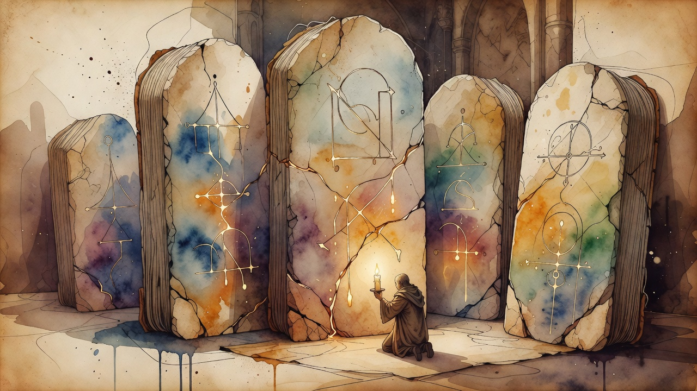

Automated discovery
Google Research Cogentic produces new proofs on five open problems in theoretical computer science
Cogentic, a multi-agent system from Google Research, started from bare problem statements with no expert hints and produced five new verified results on open problems in online learning, auction theory and mechanism design. The system runs orchestrator, prover, summarizer, adversarial verifier, auditor and process-advisor agents over iterative rounds — a notable step for automated proof discovery in theory, not just applied ML.